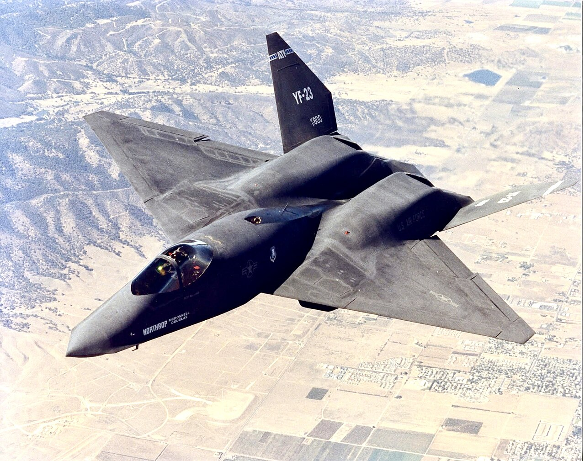

Performa Tingkat Stealth
Dirancang untuk kecepatan, kepresisian, dan keandalan.
Beli Sekarang Pelajari Lebih Lanjut
Dirancang untuk kecepatan, kepresisian, dan keandalan.
Beli Sekarang Pelajari Lebih Lanjut
Northrop YF-23 atau Northrop-McDonnell Douglas YF-23 adalah pesawat tempur kursi tunggal Amerika, twin-mesin, dirancang untuk Angkatan Udara Amerika Serikat (USAF). Pesawat ini adalah finalis dalam kompetisi USAF Advanced Tactical Fighter (ATF), bersaing dengan Lockheed YF-22.
Pada tahun 1980-an, USAF mencari pengganti untuk pesawat tempur mereka untuk menghadapi ancaman Su-27 dan MiG-29 Uni Soviet. Beberapa perusahaan mengajukan proposal. USAF memilih Northrop bersama McDonnell Douglas untuk mengembangkan YF-23, sedangkan Lockheed, Boeing, dan General Dynamics mengembangkan YF-22.
YF-23 memiliki keunggulan siluman dan kecepatan tinggi, tetapi kurang selincah dibandingkan YF-22. Setelah empat tahun pengembangan dan evaluasi, YF-22 diumumkan pemenang pada 1991 dan masuk produksi sebagai Lockheed Martin F-22 Raptor.
Angkatan Laut AS sempat mempertimbangkan versi ATF berbasis kapal induk untuk menggantikan F-14, namun rencana tersebut dibatalkan. Pada 2009, kedua prototipe YF-23 dipajang di museum.
Status: Diproduksi
"Platform ini benar-benar kuat dan stabil. Cocok untuk kebutuhan berat tanpa hambatan!"
"Desainnya solid dan terasa premium. Seperti 'tahan tempur' beneran!"
"Performa cepat, tampilan keren, dan sangat bisa diandalkan."

Northrop–McDonnell Douglas YF-23 adalah prototipe pesawat tempur siluman bermesin ganda, satu tempat duduk, buatan Amerika yang dirancang untuk Angkatan Udara Amerika Serikat (USAF). Tim perancang, dengan Northrop sebagai kontraktor utama, menjadi finalis dalam kompetisi demonstrasi dan validasi Pesawat Tempur Taktis Canggih (ATF) USAF, bersaing dengan tim YF-22 yang dipimpin Lockheed untuk pengembangan dan produksi skala penuh.
Pesawat Northrop-McDonnell Douglas YF-23 memiliki badan yang ramping dan menyatu, terbuat dari komposit canggih dan titanium, membentuk permukaan halus dan tanpa sambungan yang dilapisi dengan material penyerap radar untuk meminimalkan deteksi. Badan pesawat yang pipih menyatu dengan sayap berbentuk berlian dengan saluran masuk udara tersembunyi dan ekor berbentuk V yang khas, semuanya dirancang dengan cermat untuk mengurangi jejak radar dan panas.
Dirancang oleh tim kedirgantaraan canggih di Northrop dan McDonnell Douglas, struktur YF-23 mengintegrasikan komposit penyerap radar, kerangka titanium, dan permukaan yang dibentuk dengan presisi untuk meminimalkan deteksi sambil mempertahankan kekuatan tinggi. Desainnya menekankan aerodinamika siluman dengan geometri sayap-badan yang dipadukan secara cermat dan sistem yang ditempatkan di dalam untuk mengurangi hambatan, jejak panas, dan penampang radar.